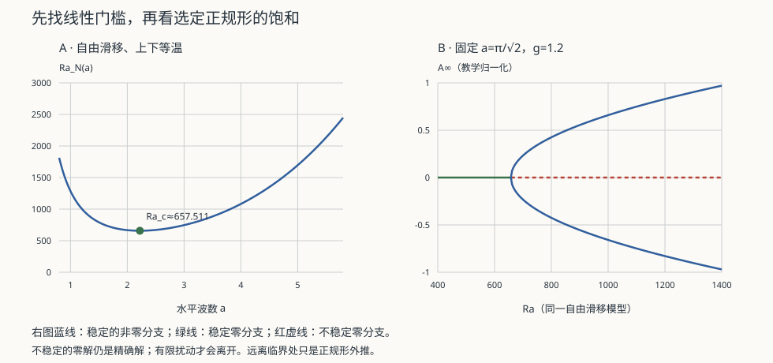

流体 IV · 不稳定性与对流
对标：Drazin & Reid《Hydrodynamic Stability》/ Chandrasekhar / Cross & Hohenberg RMP ｜ 前置：fl-01、asm-01（对称破缺与序参量） 湍流不是凭空出现的，它是层流逐级失稳的终点。本页讲清失稳的判据、几种经典机制，以及一个漂亮的联系：流体的对流失稳与相变的对称破缺，共享同一套数学（Landau 理论，asm-01）。

1. 线性稳定性分析：标准流程
给定基本流 \(\bar{\mathbf u}\)，加小扰动 \(\mathbf u'\propto e^{i(kx-\omega t)}\)，线性化 N–S，解本征值问题得色散关系 \(\omega(k)\)。
中性曲线（\(\mathrm{Im}\,\omega=0\)）在参数平面上划出稳定与不稳定区，其最低点给出临界参数与最不稳定波长——后者决定了失稳后出现的图案尺度。
这套方法与 🔗 自动化站的稳定性分析是同一个数学：特征值实部的符号决定命运。区别在于这里的算子是偏微分的，谱是连续的。
2. Rayleigh–Bénard 对流：图案形成的原型
下热上冷的流体层。浮力驱动上升、粘性与热扩散阻碍，竞争由 Rayleigh 数刻画：
临界值 \(\mathrm{Ra}_c\approx1708\)（上下刚性边界）。越过它，静止的导热态失稳，出现规则的对流胞（滚筒或六边形）。
为什么这是物理学的经典案例：
- 自发对称破缺：均匀的水平平移对称被破缺，选出特定波长（\(\lambda\approx2d\)）；
- 振幅方程与 Landau 理论：在临界点附近，振幅 \(A\) 满足
这与 asm-01 的 Landau 自由能给出完全相同的 \(A\propto\sqrt{\epsilon}\)——一个平衡态相变的形式，出现在彻底非平衡的系统中。这是"图案形成"作为一门学科的起点（Cross & Hohenberg）。
继续升高 \(\mathrm{Ra}\)：对流胞失稳 → 振荡 → 倍周期 → 混沌（fl-05）。Lorenz 方程正是这个系统的三模截断。
3. 几种经典失稳机制
| 机制 | 驱动 | 判据/现象 |
|---|---|---|
| Kelvin–Helmholtz | 剪切（速度间断） | 无粘时任意小波长皆不稳定；云街、风吹水面起浪、木星条纹交界 |
| Rayleigh–Taylor | 重流体在轻流体之上 | 蘑菇状指进；超新星抛射、惯性约束聚变的头号敌人 |
| Rayleigh–Plateau | 表面张力 | 液柱在 \(\lambda>2\pi R\) 时断裂成液滴——水龙头的水流为何断成珠 |
| Taylor–Couette | 旋转离心 | 同轴筒间出现 Taylor 涡；是研究分岔序列的经典实验台 |
| Rayleigh 判据（旋转） | 角动量分布 | \(d(\Omega r^2)^2/dr<0\) 则不稳定——吸积盘为何需要 MRI（ap-05） |
Kelvin–Helmholtz 的普遍性值得强调：任何有速度剪切的界面都可能失稳。它同时出现在云层、太阳日冕、星系际气体与实验室等离子体中——同一个色散关系，跨越二十个数量级。
4. 转捩：线性理论的失效
一个重要的诚实标注：管流（Poiseuille）在所有雷诺数下线性稳定，但实验中 \(\mathrm{Re}\gtrsim2000\) 就会转捩为湍流。
矛盾如何化解：
- 线性算子非正规（non-normal）：即使所有本征值衰减，扰动仍可瞬态放大几个数量级（"瞬态增长"）；
- 放大后非线性接管，把系统推入湍流吸引子；
- 转捩因此是有限振幅、亚临界的——依赖扰动大小，且带有强烈的随机性与迟滞。
这是"线性稳定 ≠ 实际稳定"的教科书案例，在控制理论中有完全对应的现象（非正规系统的瞬态放大，🔗 自动化站）。
5. 练习与要点
例 1（对流胞的尺度） 一层 1 cm 厚的水，\(\Delta T=5\) K：估算 \(\mathrm{Ra}\sim10^5\gg\mathrm{Ra}_c\)——对流早已发生。这就是为什么加热锅底的水立刻翻滚，而不是靠热传导。
例 2（地幔对流） \(d\sim3000\) km，尽管 \(\nu\) 极大（\(\sim10^{21}\) Pa·s），\(d^3\) 的巨大使 \(\mathrm{Ra}\sim10^7\)——地幔在对流，周期约亿年，这就是板块运动的引擎。
例 3（RT 不稳定与聚变） 惯性约束聚变中，靶丸压缩时轻推重形成 RT 不稳定，指进会刺穿燃料层、破坏点火。抑制它是该路线的核心工程难题之一（fl-06）。\(\blacksquare\)
下一页：失稳之后是什么？Lorenz 从对流方程截出三个模，意外发现了确定性系统中的不可预测——混沌。